{kind=link}
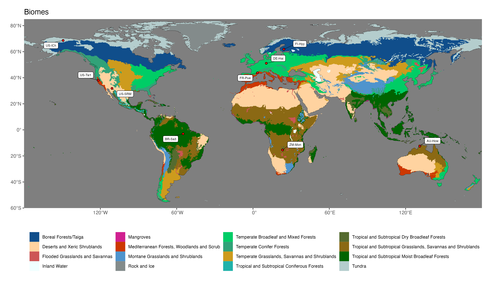
2 Biogeography
2.1 A global view of vegetation
We start with the observation that the global distribution of plants and characteristic assemblies of different plant species is not random, but relates to climate. Around the beginning of the 19th century, Alexander von Humboldt pursued expeditions to different places on Earth and connected the multitude of his local observations into a global view of biogeography. He was the first to realize that vegetation zones along elevational gradients were shifted across different mountain ranges on different continents and located at different latitudes, and that the elevational and latitudinal patterns in vegetation were related to climate - in much the same way across the Earth. This finding is visualised by the schematic scientific drawing in Figure 2.1. The figure illustrates, for example, that the treeline increases from the high northern latitudes of Lapland at 68\(^\circ\)N to the Alps and Pyrenees at 42-46\(^\circ\)N and to the Himalaya at 29-32\(^\circ\)N. Or that the elevation at which Betula alba (birch) grows varies from 1000-2000 ft in Lapland, to 4000-5000 ft in the Alps, and about 15,000 ft in the Himalaya. Figure 2.1 also illustrates that the treeline doesn’t increase monotonically with decreasing latitude. Although not spelled out in the figure, this is a hint at the importance of water, along with temperature, for controlling vegetation. We’ll revisit this observation later in this book. Humboldt’s integration of globally distributed observations into his global view of climate as a driver of vegetation was pioneering and forms the basis of our modern approach to understanding and modelling global vegetation patterns and how they are influenced by climate change.

2.2 Biomes
Today’s geodata provides information on climate and vegetation properties with global coverage. This enables a global mapping of vegetation, filling in the blank spots between the local observations made by Alexander von Humboldt 200 years ago. Global patterns in the distribution of vegetation become apparent when grouping plants and plant functional types (see Section 2.3) into biomes or broad vegetation classes. A global map of biomes following the definition and global delineation by Olson et al. (2001) is given in Figure 2.2. The exact delineation and naming of biomes varies between different sources, but the main distinctions are shared among all of them.
Each biome is characterised by the types of dominant plants (plant functional types), their characteristics (traits), ecosystem structural and functional properties, and landscape processes (e.g., fire). Underlying all of this is the characteristic climate. The following biome classification (based on Bonan (2015) and slightly deviating from Olson et al. (2001)) can be made.
Note
Click on the biome names below to open a tab that lists some key characteristics and provides a Walter-Lieth climate diagram for a representative site, located in that biome. The sites are locations where ecosystem water and carbon fluxes, along with meteorological variables, are measured. We will revisit data from these same sites in later chapters, then with a focus on water and carbon fluxes and the phenology. The locations of the sites are indicated on the map in Figure 2.2.
Walter-Lieth climate diagrams show monthly climatologies of average temperature and precipitation on the same axis and scaled such that months where the blue curve (precipitation, mm month-1) is above the red curve (temperature, \(^\circ\)C) indicates humid periods, while the opposite relative curve position indicates dry periods. Dry periods are roughly characterized by a potential evapotranspiration higher than precipitation (see Chapter 7). Blue bars along the x-axis indicate months with likely frost. Annotations on the top of the graph indicate the observation period (left), the mean annual temperature (center), and the mean annual precipitation (right). The average temperatures of the warmest and coldest months are given to the left of the temperature axis.
- warm year-round
- no or little precipitation seasonality
- tall vegetation height, high productivity, high total leaf area per unit ground area (leaf area index, LAI), fast decomposition
- large, thin leaves
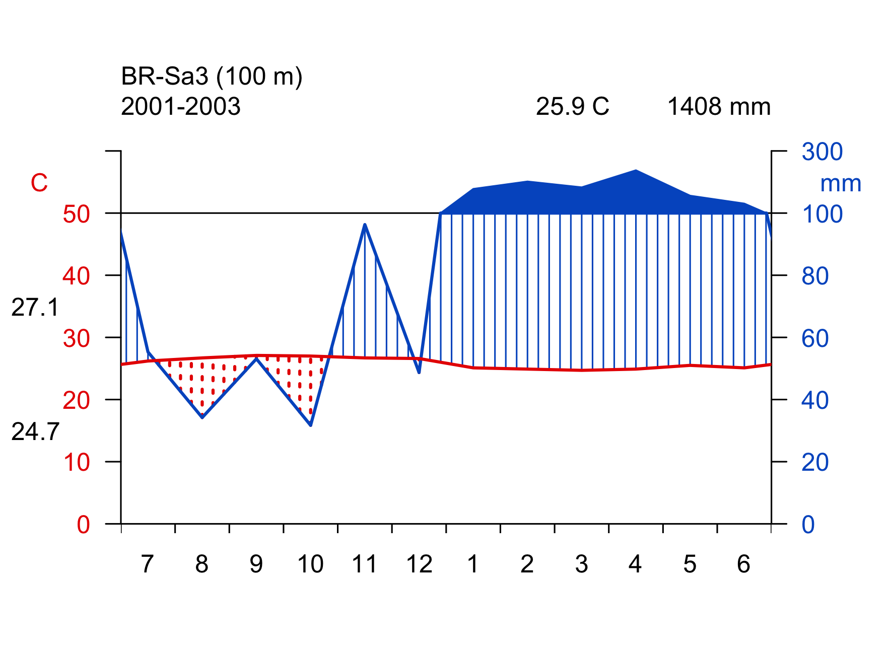
- warm year-round
- dry season
- leaves are (partly) shed during the dry season as a water saving strategy
- shorter stature and lower LAI than tropical moist broadleaved (evergreen) forests
- small, thick leaves
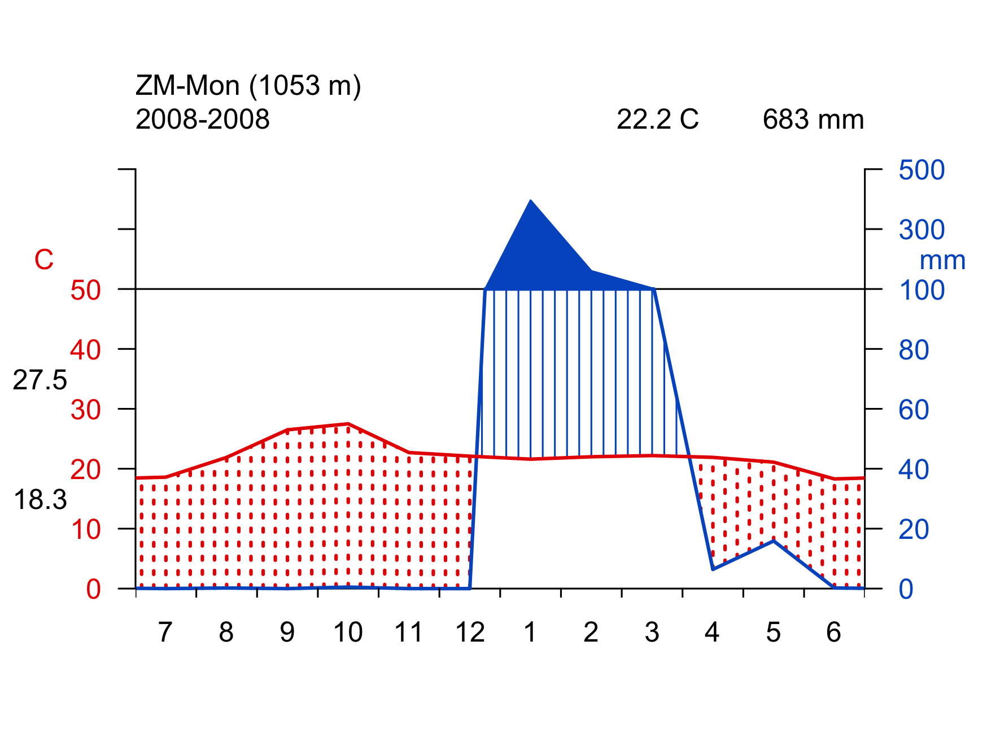
- warm year-round
- pronounced dry season
- widely spaced trees, mixed with grasses
- low plant biomass, deep roots
- regular fires
- tropical and temperate dry climates
- C3 and C4 grasses (see below), distribution governed by temperature
- temperate grasslands in dry, seasonally hot, semiarid climates with annual precipitation less than about 1000 mm
- transitional between forests and desert
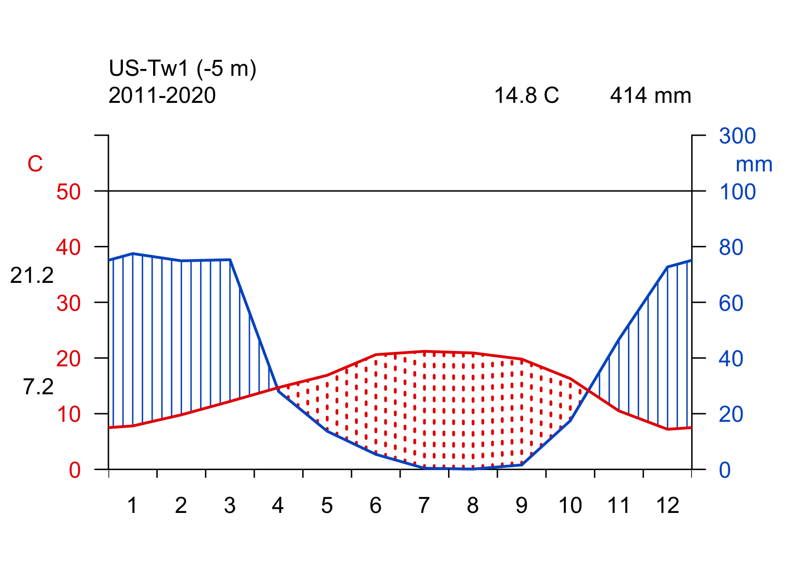
- less than 250 mm annual precipitation
- short, widely spaced desert scrub and shrubland
- germination after intense rain, leaf shedding during dry period
- cacti and succulents store water and use the CAM photosynthetic pathway to minimize water loss during photosynthesis
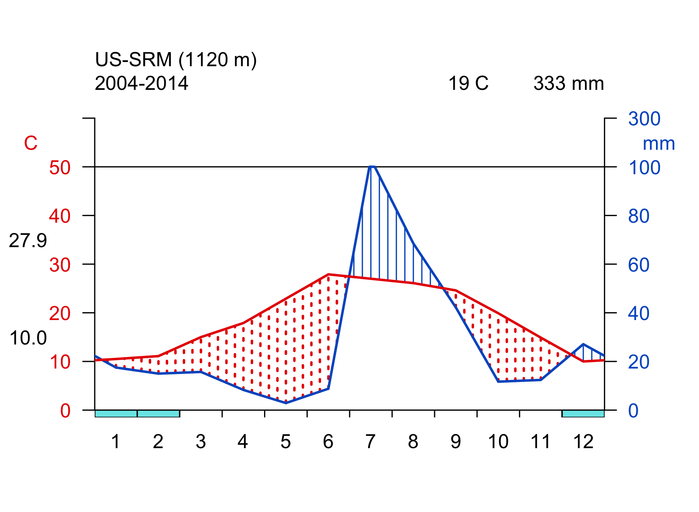
- more than 1000 mm annual precipitation
- deciduous and evergreen trees, sometimes mixed
- low winter light and temperature limits productivity
- tall trees
- additional productivity limitation in summer due to water limitation
- less limited productivity by temperature and light in winter than temperate forests
- mild and moist winters
- short stature trees, dense shrubs
- thick, waxy leaves
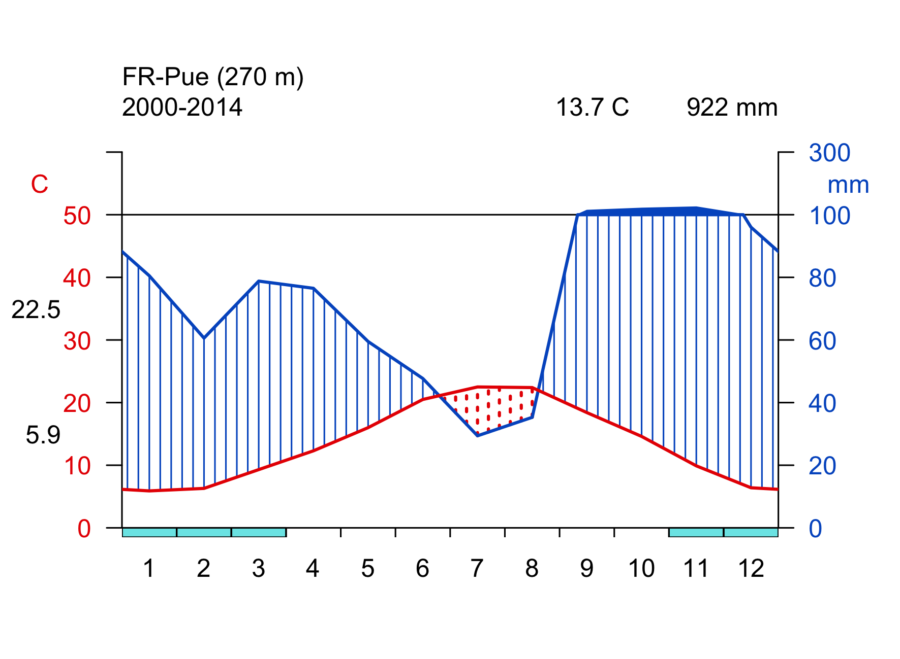
- very cold winters, cool summers
- winter light and temperature limits productivity
- mostly needle-leaved evergreen
- shorter and more open than temperate forests
- in Siberia: extreme winter low temperatures favour deciduousness of larch (larix decidua)
- tree-less, grass-like sedges, dwarf shrubs, lichens, and mosses
- very short vegetation period
- frozen ground, seasonal thawing of top ~50 cm (permafrost)
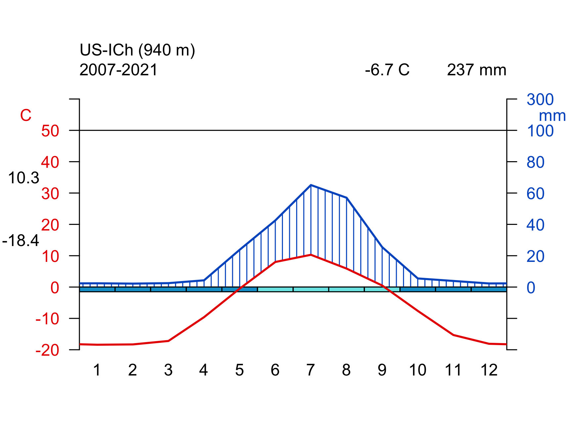
2.2.1 Biomes in climate space
Figure 2.2 shows biomes in geographical space - as a global map. Acknowledging their intricate relationship with climate, biomes can also be delineated in climate space - in a diagram defined by mean annual temperature (MAT) along one axis and mean annual precipitation (MAP) along the other axis. This yields a plot following Whittaker (1975). Note that the biome definition shown in Figure 2.12 does not exactly match the definition of biomes given above as it is mainly aimed at separating with respect to MAT and MAP. For example, Mediterranean forests are not separated in the “Whittaker-plot”. This is because their characteristic climate is not distinguished by annual means, but by the seasonality of temperature, solar radiation, and precipitation.
Code
# library(ggplot2)
# library(devtools)
# devtools::install_github("valentinitnelav/plotbiomes")
# library(plotbiomes)
# plotbiomes::whittaker_base_plot() +
# theme_classic()
# ggsave(here::here("book/images/biomes_whittaker.png"), width = 7, height = 4)
knitr::include_graphics("images/biomes_whittaker.png")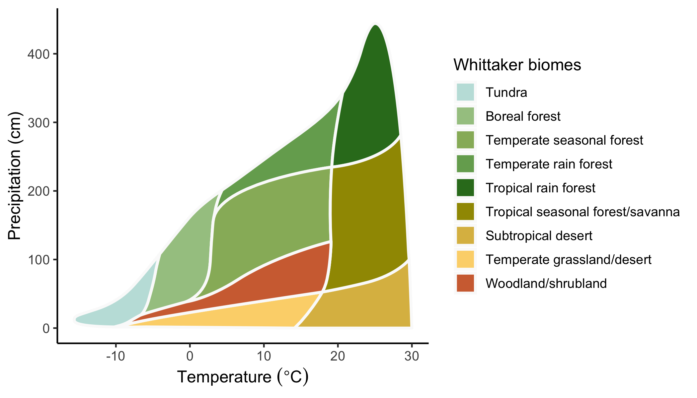
2.3 Plant functional types
Each biome is characterised by a typical assembly of plant functional types (PFT, Figure 2.13). PFTs are a grouping of plant species based on their key physiological, morphological, and life history characteristics. That is, we can distinguish between annual (mostly grasses and herbs) and perennial (mostly trees and shrubs) plants, between needle-leaved and broadleaved trees, and between deciduous and evergreen trees. A key physiological distinction can further be made between grasses following the C3 vs. the C4 photosynthetic pathway (see Chapter 4). Thereby, the bewildering diversity of the plant kingdom can be reduced to a small set of PFT. A common categorization distinguishes the following PFTs:
- needle-leaved evergreen trees
- broadleaved evergreen trees
- needle-leaved deciduous trees
- broadleaved deciduous trees
- broadleaved annuals (herbs)
- C3 grasses
- C4 grasses
Global vegetation models use PFTs as their basic unit for distinguishing plants. The exact delineation of PFTs implemented in such models may vary from the list given above. Further distinctions may be made and are relevant in a global vegetation and carbon cycle modelling context. For example, only a relatively small subset of plants is known to associate with symbiotic nitrogen (N)-fixing bacteria that live in root nodules of the host plant (“N-fixing plants”, see also Chapter 11). This association is highly relevant for the N economy of the plant and its productivity and competitiveness under different levels of N availability.
Plants can also be distinguished into the botanical classification of angiosperms (flowering plants) and gymnosperms (seed-producing plants that include conifers, cycads, and Ginkgo). The distinction between angiosperms and gymnosperms largely aligns with the distinction between needle-leaved and broadleaved plants (but see Ginkgo). The two groups are not only distinguished by their phylogenetic heritage, but also by essential characteristics that relate to the efficiency by which they photosynthesise and transpire water. Angiosperm leaves typically exhibit higher photosynthesis and transpiration rates and are thinner and shorter-lived than leaves of gymnosperms. These differences relate to differences in how the water transport system (plant hydraulics) is built. A larger number and a wider diameter of water transport organs in angiosperms enable a higher water conductivity - essential for sustaining higher photosynthetic rates than in gymnosperms.
2.4 Traits
The physiological, morphological, and life history characteristics of different plants determine their productivity and competitiveness in a given climate. Such characteristics are referred to as plant functional traits, or often just traits. Plant species can be described by a set of traits and a subset of certain traits yields the distinction into PFTs described above: leaf habit (deciduous vs. evergreen), leaf form (needle-leaved vs. broadleaved), and the life history strategy distinguishing annual vs. perennial. A range of additional traits are commonly described and investigated scientifically. Here, we will not consider additional ones. The concept of a plant functional trait is that it describes a largely immutable characteristic of a plant species that determines metabolic rates (photosynthesis, respiration) and their relationship to the abiotic environment (e.g., temperature), nutrient and water demand, and ultimately its demographic rates (growth, fecundity, mortality) and thus competitiveness.
Today’s global distribution of species and biomes (assuming no intervention by human land use and forest management) is the outcome of competition and thus reflects the combination of plant functional traits that optimises competitiveness of a species under the present-day climate. The distribution of biomes and PFTs is thus a direct reflection of the climate.
For example, whether a region is dominated by deciduous or by evergreen trees and forests is determined by the benefits and costs for a plant of maintaining leaves year-round. Evergreen trees benefit from the ability to photosynthesise and gain carbon around the year. For example, in Mediterranean regions, although light levels are lower in winter than in summer, ample moisture and non-negligible light enables evergreen trees to assimilate carbon also during winter months. However, leaves and needles of evergreen plants have to be built for lasting several years. Such leaves are typically much thicker than those of deciduous trees and thus require more carbon per unit leaf area for their construction. The leaf mass per unit leaf area is commonly referred to as the leaf mass per area, LMA, and is an important additional plant trait as it is directly linked to a plant’s carbon balance. Over the leaf lifespan, the initial high construction costs of high-LMA leaves are outweighed by the additional carbon assimilation during periods when deciduous trees shed their leaves.
Leaf-shedding of deciduous trees, in contrast, is a strategy to avoid having to build costly long-lasting leaves and maintaining them year-round (which also incurs an additional respiration cost, also in the form of carbon). Leaves are shed during periods when the climate is unfavourable for photosynthesis - during cold and dark winter months, or during excessively dry periods.
Note that plant functional traits are often not entirely immutable. Instead, traits may vary also within a species, and these variations are often driven by the environment. This is called acclimation. Such variations can even arise over the course of a season. For example, photosynthetic traits can rapidly acclimate to the large changes in light availability over the course of a year. Some traits are more plastic than others. For example, a tree is either needle-leaved or broadleaved. There is no continuum between the two leaf forms. In contrast, the nitrogen content per unit leaf mass is relatively plastic within a species.
A changing environment changes the competitiveness of a given species, i.e., of a given trait combination. As a result, some traits may acclimate to some extent within weeks to years. Over longer time scales, the altered demographic rates in a new climate affect the competitiveness of a species (even after some of its traits may have acclimated to a new climate) and ultimately shift demographic rates and the community composition. In grasslands, where the demographic cycle is short, such community composition changes may unfold over time scales of a few years. In forests, the longevity of an individual tree is on the order of decades to centuries and community composition changes unfold on a correspondingly long time scale.
2.5 Global vegetation patterns
The biome classification is a way to discretize vegetation based on several characteristics (e.g., tree cover fraction). However, many of these characteristics describe observable variables that vary more or less gradually across environmental gradients, and each of these variables can be mapped across the globe thanks to Earth observation data. These global patterns of different observable variables reflect how the climate influences vegetation structure and functioning across the globe (independent of a classification into biomes). In much of the remainder of this course, we will investigate these vegetation-climate relationships without considering the biome classification. These relationships are informative for understanding how different processes of terrestrial ecology, plant physiology, the carbon cycle, and land-climate interactions are driven by the environment and vary across the globe.
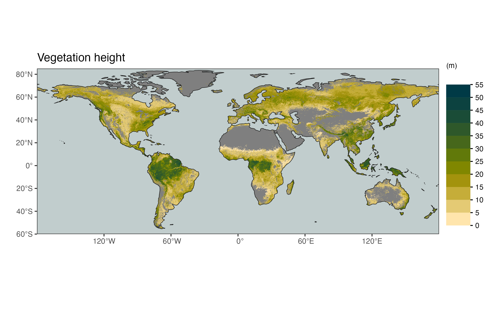
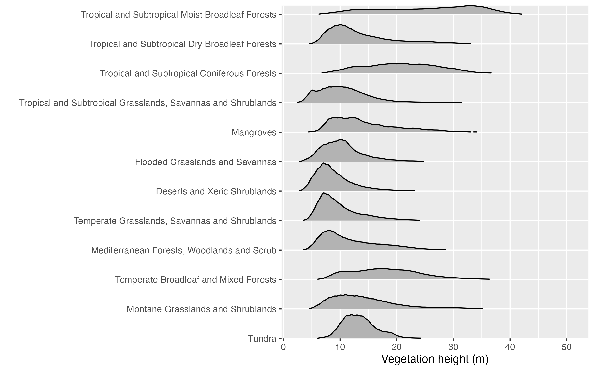
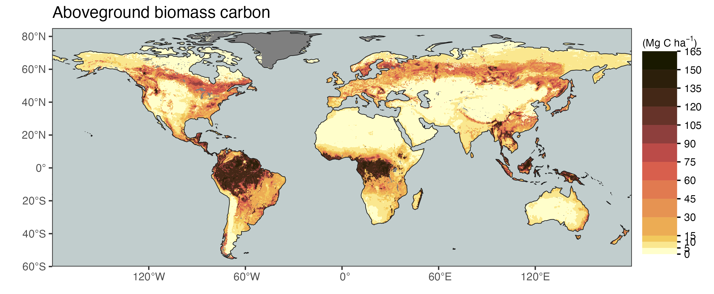

Note that the global vegetation patterns shown above are based on Earth observation data from satellite remote sensing. These reflect the actual state of the land surface and thus the influence of human land use and land use change. In contrast, biomes are defined for a potential natural vegetation. Therefore, you see, for example, that the tree cover fraction has very wide distributions, particularly in the biome “Temperate broadleaved and mixed forests” (Figure 2.21).
2.6 Vegetation types
Note that the categorisation of vegetation into biomes is different from a categorisation of vegetation into vegetation types or land cover classes. A widely used distinction of vegetation types/land cover classes is that of the International Geosphere Biosphere Programme (IGBP, see Table 2.1). Vegetation types distinguish what can be seen from space and are thus amenable to remote-sensing based land cover classification. However, for example, different types of evergreen broadleaved forests are not distinguished (e.g., moist tropical, Mediterranean, and temperate evergreen broadleaved forests). Also, vegetation types/land cover classes distinguish land cover that is dominated by human activities (agricultural and urban), while biomes distinguish naturally occurring (i.e., without human influence) vegetation zones. In other words, biomes reflect the potential natural vegetation.
| Code | Name | Description |
|---|---|---|
| BSV | Barren Sparse Vegetation | Lands exposed soil, sand, or rocks and has less than 10% vegetative cover during any time of the year. |
| CRO | Croplands | Lands covered with temporary crops followed by harvest and a bare soil period (e.g., single and multiple cropping systems). Note that perennial woody crops will be classified as the appropriate forest or shrub land cover type. |
| CSH | Closed Shrublands | Lands with woody vegetation less than 2 meters tall and with shrub canopy cover >60%. The shrub foliage can be either evergreen or deciduous. |
| CVM | Cropland/Natural Vegetation Mosaics | Lands with a mosaic of croplands, forest, shrublands, and grasslands in which no one component comprises more than 60% of the landscape. |
| DBF | Deciduous Broadleaf Forests | Lands dominated by woody vegetation with a percent cover >60% and height exceeding 2 meters. Consists of broadleaf tree communities with an annual cycle of leaf-on and leaf-off periods. |
| DNF | Deciduous Needleleaf Forests | Lands dominated by woody vegetation with a percent cover >60% and height exceeding 2 meters. Consists of seasonal needleleaf tree communities with an annual cycle of leaf-on and leaf-off periods. |
| EBF | Evergreen Broadleaf Forests | Lands dominated by woody vegetation with a percent cover >60% and height exceeding 2 meters. Almost all trees and shrubs remain green year round. Canopy is never without green foliage. |
| ENF | Evergreen Needleleaf Forests | Lands dominated by woody vegetation with a percent cover >60% and height exceeding 2 meters. Almost all trees remain green all year. Canopy is never without green foliage. |
| GRA | Grasslands | Lands with herbaceous types of cover. Tree and shrub cover is less than 10%. Permanent wetlands lands with a permanent mixture of water and herbaceous or woody vegetation. The vegetation can be present in either salt, brackish, or fresh water. |
| MF | Mixed Forests | Lands dominated by trees with a percent cover >60% and height exceeding 2 meters. Consists of tree communities with interspersed mixtures or mosaics of the other four forest types. None of the forest types exceeds 60% of landscape. |
| OSH | Open Shrublands | Lands with woody vegetation less than 2 meters tall and with shrub canopy cover between 10-60%. The shrub foliage can be either evergreen or deciduous. |
| SAV | Savannas | Lands with herbaceous and other understory systems, and with forest canopy cover between 10-30%. The forest cover height exceeds 2 meters. |
| SNO | Snow and Ice | Lands under snow/ice cover most of the year. |
| URB | Urban and Built-Up Lands | Land covered by buildings and other man-made structures. |
| WAT | Water Bodies. | |
| WET | Permanent Wetlands | Lands with a permanent mixture of water and herbaceous or woody vegetation that cover extensive areas. The vegetation can be present in either salt, brackish, or fresh water. |
| WSA | Woody Savannas | Lands with herbaceous and other understory systems, and with forest canopy cover between 30-60%. The forest cover height exceeds 2 meters. |
Code
library(ggplot2)
library(terra)
library(tidyterra)
library(rnaturalearth)
library(rnaturalearthdata)
# Most color codes used here are from external data
# load(here::here("data/worldgrids_pal.rda")) # obtained from https://github.com/Envirometrix/plotKML/blob/master/data/worldgrids_pal.rda
# load land cover data, raster data
raster_vegtype <- terra::rast(
here::here("data/modis_landcover__LPDAAC__v5.1__0.1deg__2010.nc")
) |>
tidyterra::mutate(Band1 = as.factor(Band1)) |>
tidyterra::rename(landcover = Band1)
# load coast outline, vector data
coast <- rnaturalearth::ne_coastline(scale = 110, returnclass = "sf")
# create map
ggplot() +
tidyterra::geom_spatraster(data = raster_vegtype) +
geom_sf(data = coast,
colour = 'black',
linewidth = 0.1) +
scale_fill_manual(
values = c(
"1" = "azure", # worldgrids_pal$IGBP["Water " ] , #"water" ;
"2" = "dodgerblue4" , #"evergreen needleleaf forest" ;
"3" = "forestgreen" , #"evergreen broadleaf forest" ;
"4" = "#9ED003", # worldgrids_pal$IGBP["Deciduous Needleleaf forest "] , #"deciduous needleleaf forest" ;
"5" = "springgreen3" , #"deciduous broadleaf forest" ;
"6" = "#31A278", # worldgrids_pal$IGBP["Mixed forest "] #"mixed forest" ;
"7" = "#A84974", #worldgrids_pal$IGBP["Closed shrublands " ] , #"closed shrublands" ;
"8" = "#FFD3A0" , #"open shrublands" ;
"9" = "#CAFE8F", #worldgrids_pal$IGBP["Woody savannas "] , #"woody savannas" ;
"10" = "#F7D600", #worldgrids_pal$IGBP["Savannas " ] , # "savannas" ;
"11" = "khaki3" , # "grasslands" ;
"12" = "violetred" , # "permanent wetlands" ;
"13" = "#FAFE03", # worldgrids_pal$IGBP["Croplands " ] , # "croplands" ;
"14" = "#FF2A00", #worldgrids_pal$IGBP["Urban and built-up "] , # "urban and built-up" ;
"15" = "#8A9000" , #worldgrids_pal$IGBP["Cropland/Natural vegetation mosaic "] , # "cropland (natural vegetation mosaic)" ;
"16" = "#FFFFFF", #worldgrids_pal$IGBP["Snow and ice "] , # "snow and ice" ;
"17" = "#AAAAAA", # worldgrids_pal$IGBP["Barren or sparsely vegetated "] , # "barren or sparsely vegetated" ;
"18" = "#424242" # worldgrids_pal$IGBP["Unclassified "] # "unclassified or fill values" ;
),
labels = c(
"1" = "water",
"2" = "evergreen needleleaf forest",
"3" = "evergreen broadleaf forest",
"4" = "deciduous needleleaf forest",
"5" = "deciduous broadleaf forest",
"6" = "mixed forest",
"7" = "closed shrublands",
"8" = "open shrublands",
"9" = "woody savannas",
"10" = "savannas",
"11" = "grasslands",
"12" = "permanent wetlands",
"13" = "croplands",
"14" = "urban and built-up",
"15" = "cropland (natural vegetation mosaic)",
"16" = "snow and ice",
"17" = "barren or sparsely vegetated",
"18" = "unclassified or fill values"
)
) +
scale_x_continuous(expand = c(0, 0)) + # avoid gap between plotting area and axis
scale_y_continuous(expand = c(0, 0), limits = c(-60, 85)) +
labs(title = "Vegetation types") +
theme(legend.position = "bottom",
legend.text = element_text(size = 6),
legend.title = element_blank())2.7 Climate zones
While the biome categorisation is based on plant functional types and reflects a mix of vegetation types and climate, the categorisation into vegetation types is independent of climate, but purely based on vegetation and land cover properties that can be sensed from space. In contrast to this approach, we may focus exclusively on the climate and distinguish climate zones. The Köppen-Geiger climate classification (Köppen 1884) is based on a hierarchical classification that separates climate based on the seasonality of monthly air temperature and precipitation. The climate zones are chosen such that they largely align with the biomes. For this, water availability during the main vegetation periods and temperature minima during winter and maxima during summer are recognized to be particularly influential for the composition of the vegetation and are considered for the Köppen-Geiger climate classification.
Based on the classification scheme described in Figure 2.22 and data of monthly climatologies, the climate zones can be mapped across the globe (Figure 2.23).

2.8 Hillslope-scale heterogeneity
Topography shapes microclimates and drives small-scale variations in hydrology. In mountain regions, vegetation may thus vary strongly along small spatial scales - on the order of 10-103 m. This scale - from the river channel to the ridge - is referred to as the hillslope scale. In much the same way that climate drives vegetation across biomes, so it does across the hillslope scale. The incident solar radiation and - as a consequence of that - near-surface air temperatures are affected by the local slope, aspect, and shading by the surrounding topography. Soil moisture and the groundwater table depth are affected by lateral subsurface flow of water, driven by gradients in water potentials along topographical gradients. Subsurface water flow converges in depressions and concave terrain (e.g., in valley bottoms) and diverges in convex terrain. (e.g., on ridges and hilltops). As a consequence, the water table is shallow in valley bottoms and deep under ridges. Radiation and hydrology thus create microclimates and plant water availability conditions that are shaped by topography, from which result variations in vegetation.
These hillslope-scale variations “intersect” with the background climate (average climate across larger spatial scales, on the order of 104-105 m). A shallow groundwater table and moist soils in valley bottoms can promote plant productivity in arid regions and seasons. In contrast, in a humid climate, a very shallow water table in valley bottoms inhibits plant productivity due to anaerobic conditions in waterlogged soils and the inability of roots to penetrate into permanently water-saturated soil. Similarly, the influence of radiation in promoting versus inhibiting plant productivity depends on the background climate. In cold climates of the high northern latitudes, the solar zenith angle is relatively also, even in mid-summer. This creates a strong influence of the local slope and aspect. In the northern hemisphere, south-facing slopes receive more radiation - a difference to north-facing slopes that can be critical for sustaining tree growth in high northern regions. In contrast, elevated incident solar radiation in south-facing slopes can aggravate water limitation and suppress vegetation productivity in more arid climates of the subtropics and mid-latitudes of the northern hemisphere.

{kind=link}
Climate also varies along elevation due to thermodynamics and radiative transfer in the atmosphere - independent of the slope and aspect of the local terrain. Temperatures decline following the lapse rate in the troposphere, leading to a shift of vegetation zones along large elevational gradients. This phenomenon is depicted also in Humboldt’s drawings (Figure 2.1). Radiation levels are elevated at high altitudes due to a shorter path length of solar radiation travelling across the atmosphere and, consequently, a reduced attenuation of the radiation intensity. Atmospheric pressure and thus the partial pressure of oxygen declines with elevation. This implies reduced respiration and an increased efficiency of photosynthesis.
Small-scale variations in vegetation may also be driven my variations in soil characteristics and bedrock lithology which influences drainage and soil chemistry (pH, nutrient availability). Where the ground is seasonally snow-covered, very small-scale terrain features (100-102 m) and dominant wind directions drive snow accumulation and dispersion, leading to substantial small-scale variations in maximum snow depth and the duration of seasonal snow cover - with implications for plants (Körner and Hiltbrunner 2021).
2.9 Species distribution modelling and ecological niche
The notion that climate drives vegetation and the distribution of plant species enables a prediction and mapping of the species occurrence across geographical space. Data on species presence and absence can be associated with multiple variables characterizing the abiotic environment (mostly climate) recorded for the same location. The resulting empirical patterns can be used for spatial modelling and predicting whether a species is likely to occur at a new location or even a novel climate Figure 2.25.
The approach to species distribution modelling is fundamentally rooted in the ecological niche concept. As formulated by Hutchinson (1957; Araújo and Guisan 2006), each species has a fundamental niche that can be conceived as a domain in a multidimensional space defined by the environmental conditions. Environmental filtering yields the fundamental niche which is generally a subset of the Earth’s climate space (Figure 2.26). The actual, or realized niche is smaller as it is additionally constrained by biotic interactions with other species. Natural selection yields the realized niche. Several challenges for species distribution modelling exist (Zimmermann et al. 2010). For example, the species distribution is hardly ever in equilibrium with the environment, given that climate has been constantly changing (although not as rapidly as today for millions of years); topographic heterogeneity, climatic history, and ecological refugia affect the species distribution and how it varies under climate change; genetic adaptation can lead to populations within species that exhibit different responses to the environment; and niche stability over long time scales may be undermined not only by genetic adaptation, but also by physiological effects of CO2 which fundamentally alters photosynthesis and transpiration and will therefore shift water availability-related niche limits observed today.
2.10 Temporal variations of vegetation
Spatial patterns in vegetation are influenced by how climate varies across different areas. Similarly, changes in vegetation are influenced by how climate changes over time. Vegetation change at temporal scales of thousands of years is recorded, for example, by pollen deposited in layered sediments. Given that they are preserved and that the sediment layers can be dated, the vegetation composition over time can be reconstructed. An example is given for the Moossee, near Bern in Figure 2.27. The pollen diagram documents how vegetation on the Swiss Plateau underwent several major changes since the last Glacial. At around 19 kyr BP, a steppe tundra established, replaced around 16 kyr BP by a shrub tundra. At around 15 kyr BP, a boreal forest established before it was replaced by a temperate mixed oak forest at the beginning of the Holocene - the current warm period at 11,600 yr BP. A beech-dominated temperate forest, as it is common for this region today, established around 8200 yr BP. Figure 2.27 also shows that these biome replacements coincided with rapid climatic shifts and that the vegetation change was largely instantaneous. This instantaneous response of species composition is interpreted as a reflection of the importance of glacial refugia from which a species may rapidly expand upon climate change (Rey et al. 2020).
Multiple vegetation reconstructions for the Last Glacial Maximum (LGM) obtained from globally distributed locations provide a picture of how biomes were distributed across the Earth around 20 ka BP (Figure 2.29, bottom panel). The difference in climate and CO2 (global mean temperatures were around 6°C lower than at present; CO2 was at around 180 ppm, today it’s at over 420 ppm) caused forest biomes to recede and grasslands to expand across most of the globe. The upper panel of Figure 2.29 shows the simulated biome distribution. These simulation results are not based on a species distribution model, but on a Dynamic Global Vegetation Model that accounts for both climate and CO2 effects and simulates the distribution of PFTs from which biomes were derived here. The simulation of vegetation distribution at the level of PFTs instead of species is less affected by biotic interactions that are hard to simulate at global scale.
The mapping of vegetation for past climates is enabled by the biomization of paleo-ecological records (I. Prentice et al. 1996). Classifying vegetation into biomes is useful for distilling ecological information beyond the anthropogenic impact. Biomes reflect a potential natural vegetation. The use of biomes is therefore important for designing conservation efforts suited for a specific climate (Olson et al. 2001), and is instructive for understanding environmental controls on ecosystem types as reflected by the agreement of biomes and climate zones (Section 2.7). Yet, to understand principles and mechanisms of how plant physiology, biogeochemical cycling, and land-climate interactions are shaped by the environment, we often don’t need to rely on a classification of vegetation. As we will learn in later chapters, the abiotic environment drives vegetation functioning in much the same way (bar some exceptions) through generally applicable physical laws across the whole terrestrial biosphere.
Exercise
- Explain the difference between biomes, as defined for example by Olson et al. (2001), and the IGBP vegetation classes.
- Give a good reason for why precipitation and temperature are plotted both along the y-axis in the Walter-Lieth climate diagrams. What is the meaning of the blue hashed area and the red dotted area?
- Compare the seasonality of temperature and precipitation of the example site given for the Mediterranean forest biome (FR-Pue) and the boreal forest biome (FI-Hyy). Which site do you expect to have a stronger seasonal variation in runoff?
- For the seven biomes for which climate diagrams are shown above, establish a ranking with respect to the growing season length.
- Consider an ecosystem that is characterised with a fractional plant cover of trees of 10% and a fractional plant cover of grasses of 90%. What biome does it belong to?
- In a changing climate, where do you expect vegetation composition shifts to unfold faster: in a large plain or in a mountainous landscape?